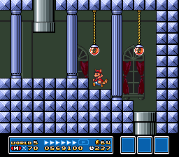
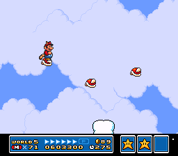

SUPER MARIO BROS. 3
Wiki
Levels
World 3
| World | Image | Overview |
|---|---|---|
| World 5-1 |
The first level is a large hill made up of stone blocks and Chain Chomps. This level introduces Buster-Beetles and Walking Piranhas. |
|
| World 5-2 |
This level features two pathways. To reach the first pathway, the player must land on a note block just below the pipe they drop out of and navigate up to a warp pipe. The second pathway requires the player to continue free-falling after dropping out of the pipe. |
|
| World 5-3 |
A level split between two ground sections. This level introduces the Goomba's Shoe and Munchers. |
|
| World 5-  1 1 |
The fortress level on the ground has narrow passageways guarded by Thwomps and Roto-Discs. |
|
| World 5-  |
 | This tower serves as a bridge between the land and the sky. If the player wants to return to the ground, they can play a short descending segment. To return to the sky, the player will have to go through the tower again. |
| World 5-4 |
The first level that takes place in the sky portion of Sky Land. This level has many cloud platforms and rotary lifts. |
|
| World 5-5 |
This athletic level introduces Fire Chomps and is made up almost entirely of donut lifts. |
|
| World 5-6 |
 | An autoscrolling athletic level that introduces Para-Beetles. The player can use the Para-Beetles as platforms to move forward. |
| World 5-7 |
This level includes many Starmen and is made up almost entirely of bricks. |
|
| World 5- 2 |
The fortress level in the sky has several broken platforms situated between lava both above and below. |
|
| World 5-8 |
This level features Lakitu dropping Spiny Eggs at the player as they jump across small platforms. |
|
| World 5-9 |
This level scrolls upward diagonally automatically with moving platforms and Fire Chomps. |
|
| World 5- |
 |
The fifth airship level of the game, with Roy Koopa as the boss. This level includes a Rocket Engine and many cannons and Turtle Cannons. |
| World 5-  |
Two sets of Hammer Brothers move around the land portion of the map, with one set of Hammer Brothers moving around in the sky. The arenas are similar between them, with two rows of seven bricks, though the area they are fought in differs by location. Defeating one of the Hammer Brother pairs on land will award the player with a P-Wing while defeating the other pair of Hammer Brothers on land will award the player with a Starman. Defeating the pair of Hammer Brothers in the sky will award the player with a Music Box. |